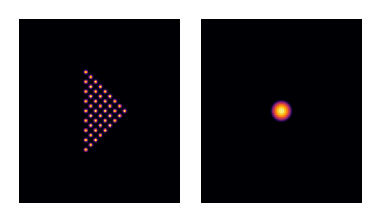
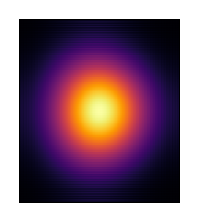
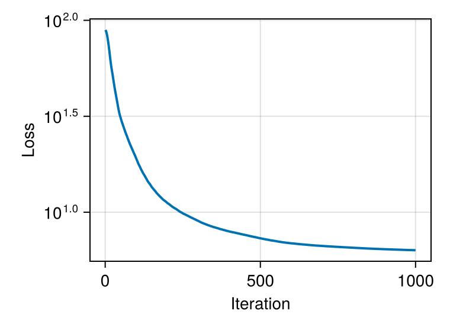
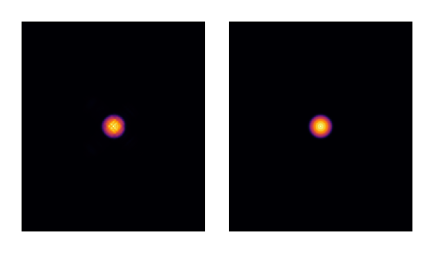
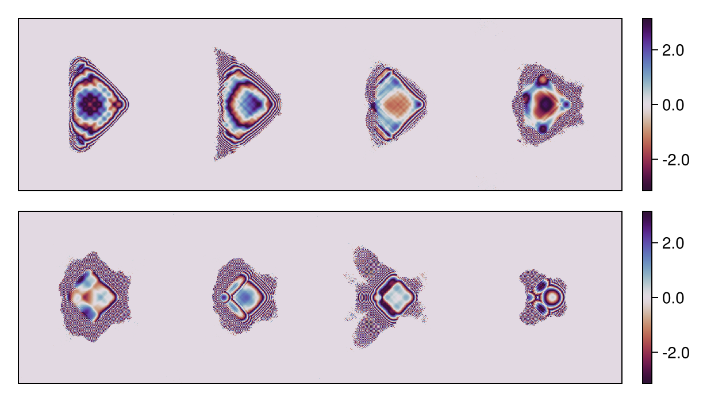
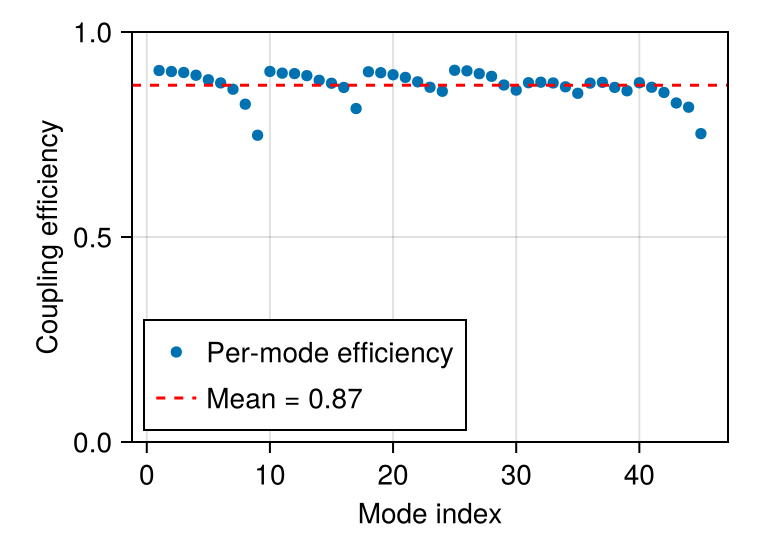

Hermite-Gaussian multimode sorter
This tutorial demonstrates the inverse design of a multi-plane diffractive optical system that transforms spatially separated Gaussian beams into copropagating Hermite-Gaussian modes. This canonical mode sorting problem has applications in mode-division multiplexing for telecommunications and multimode fiber imaging.
The approach presented here builds on the work of Carpenter and Fontaine, who demonstrated at CLEO/Europe in June 2017 [1] an efficient mapping from triangular Gaussian beam arrays to Laguerre-Gaussian modes (45 modes) using a remarkably low number of phase planes. This work was significantly scaled up in their Nature Communications paper [2], demonstrating high-fidelity mode sorting of 210 modes. This remarkable achievement showcases the efficiency of this approach.
At that time, gradient descent was not yet widespread in the optics community outside of nanophotonics. The original designs relied on error-reduction algorithms similar to Gerchberg-Saxton, popular since the 1990s. With today's automatic differentiation tools, we can revisit these problems using modern gradient-based optimization. This approach has been explored in recent works [3,4] and enables rapid design iteration as demonstrated in this tutorial.
Technical approach
The optical system consists of multiple phase masks (Diffractive Optical Elements, or DOEs) separated by free-space propagation. This configuration is sometimes referred to as multi-plane light conversion (MPLC) or Diffractive Optical Neural Networks (DONNs) in different contexts. In this tutorial, we optimize 8 cascaded phase masks using algorithmic differentiation, a mathematical optimization approach applicable to any diffractive optical system.
References:
[1]. J. Carpenter and N. Fontaine, "Multi-plane light conversion with low plane count," CLEO/Europe, EJ-2 (2017).
[2]. N. K. Fontaine, R. Ryf, H. Chen, D. T. Neilson, K. Kim, and J. Carpenter, "Laguerre-Gaussian mode sorter", Nature communications, 10(1), 1865 (2019).
[3]. N. Barré and A. Jesacher, "Inverse design of gradient-index volume multimode converters," Optics Express, 30(7), 10573-10587 (2022).
[4]. H. Kupianskyi, S. A. Horsley and D. B. Phillips, "High-dimensional spatial mode sorting and optical circuit design using multi-plane light conversion," Apl Photonics, 8(2) (2023).
using FluxOptics, Zygote, CairoMakieProblem setup
We define the computational grid and wavelength for the optical system.
ns = (350, 400)
ds = (1.0, 1.0)
λ = 1.55Input modes: Gaussian beams in triangular layout
We create 45 input Gaussian beams (9 groups) arranged in a triangular pattern. The layout is rotated by 45° and shifted to recenter them in the grid.
n_groups = 9 # Corresponds to 45 modes (1+2+3+...+9)
w0 = 5.0 # Input beam waist
px = py = 3*w0 # Pitch between beams
θ0 = π/4 # Rotation angle
in_pos = Modes.TriangleLayout(n_groups, px, py, Shift2D(-2*px, 0) ∘ Rot2D(θ0))
n_modes = length(in_pos)
input_modes = generate_mode_stack(in_pos, ns, ds, Gaussian(w0))
u0 = ScalarField(input_modes, ds, λ)
normalize_power!(u0, 1);Target modes: Hermite-Gaussian modes
We define the target output modes as Hermite-Gaussian modes with slightly larger waist (wf = 8.0) than the input Gaussians. The modes are also rotated by 45°.
wf = 8.0 # Output mode waist (HG modes need larger support)
output_modes = generate_mode_stack(ns, ds, hermite_gaussian_groups(wf, n_groups);
t = Rot2D(θ0))
vf = ScalarField(output_modes, ds, λ)
normalize_power!(vf, 1);Let's visualize the input Gaussian beams and target Hermite-Gaussian total intensity:
visualize(((u0, vf),), intensity; colormap = :inferno, height = 150)
Optical system design
For the purpose of this tutorial, we create a fictive micro-optical system with miniaturized dimensions and short propagation distances between successive elements compared to the reference articles, without consideration for practical realization of such a system. The system consists of 8 phase masks (multi-plane light conversion with 8 planes) separated by free-space propagation.
z = 150.0 # Propagation distance between DOEs (arbitrary for this example)
p = ASProp(u0, z; use_cache = true)
doe() = Phase(u0; trainable = true, buffered = true)Create an optical system with 8 different DOEs
s = ScalarSource(u0)
system = (s |> p |> doe() |> p |> doe() |> p |> doe() |> p |> doe() |> p |> doe()
|> p |> doe() |> p |> doe() |> p |> doe() |> p) |> (; inplace = true);We propagate the input modes through the system before optimization and visualize the total intensity:
uf = system().out
visualize(uf, intensity; colormap = :inferno, height = 150)
Note: We observe some small aliasing for the total propagation distance. This could be mitigated by increasing the grid size or adding an aperture stop somewhere in the system, but for this example it doesn't significantly affect the conditioning and convergence of the simulation.
Loss function and optimization setup
We define the loss as the squared difference between the output field and target field. We use FISTA with a sparsity proximal operator to promote smooth phase distributions.
field_metric = SquaredFieldDifference(vf)
loss(m) = sum(field_metric(m().out));
# This is equivalent to:
# loss(m) = sum(abs2.(m().out.electric .- vf.electric))
prox = IstaProx(2e-4) # Sparsity prox to avoid fine details at low energy
rule = ProxRule(Fista(5), prox)
opt = FluxOptics.setup(rule, system)
# Reset each DOE to zero phase before optimization
foreach(x -> isa(x, Phase) && fill!(x, 0), get_components(system));Optimization loop
We run 1000 iterations of gradient descent with proximal optimization.
_, g = withgradient(loss, system);
FluxOptics.update!(opt, system, g[1]);
losses = []
for iter in 1:1000
val, grads = withgradient(loss, system)
FluxOptics.update!(opt, system, grads[1])
push!(losses, val)
endVisualize the convergence:
fig_loss = Figure()
ax = Makie.Axis(fig_loss[1, 1], yscale = log10, xlabel = "Iteration", ylabel = "Loss")
lines!(ax, losses; linewidth = 2)
fig_loss
Results: Optimized output field
Let's visualize the total intensity of the optimized output modes compared to the targets:
uf = system().out
visualize(((uf, vf),), intensity; colormap = :inferno, height = 150)
Visualize optimized phase masks
Let's examine the phase patterns of the 8 optimized DOEs:
masks = map(x -> angle.(cis.(get_data(x))),
filter(x -> isa(x, Phase), get_components(system)))
visualize((vcat(masks[1:4]...), vcat(masks[5:end]...)), identity;
colormap = :twilight_shifted, show_colorbars = true, height = 150)
Performance analysis: Mode coupling efficiency
Finally, we compute the coupling efficiency between the output and target modes to quantify the performance of our mode sorter:
η = coupling_efficiency(uf, vf)
η_mean = sum(η) / n_modes
fig = Figure()
ax = Axis(fig[1, 1], xlabel = "Mode index", ylabel = "Coupling efficiency")
plot!(ax, η, label = "Per-mode efficiency")
hlines!(ax, η_mean, color = :red, linestyle = :dash, label = "Mean = $(round(η_mean, digits=3))")
ylims!(ax, 0, 1)
axislegend(ax, position = :lb)
fig
The mean coupling efficiency shows how well the multi-plane system transforms the input Gaussian beams into the target Hermite-Gaussian modes. Results typically show mean efficiency around 80-90%, with some variation depending on the regularization strength.
This page was generated using Literate.jl.